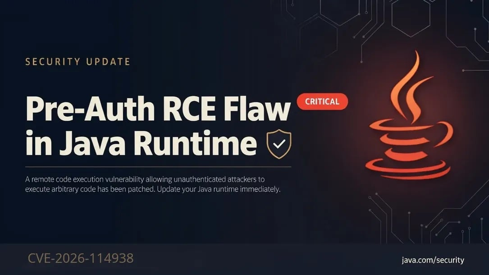

https://www.cyberkendra.com/2026/11/cve-2026-114938-pre-auth-rce-flaw-in-java-17-puts-servers-at-risk.html
국내 기업과 공공기관에서 널리 사용하는 자바(Java)에 치명적인 보안 취약점 발견.
OpenJDK 17.0.6 이상 버전에서 로그인 없이 서버에 악성 코드를 실행할 수 있는 취약점(CVE-2026-114938)이 보고됨.
위험도는 10점 만점에 9.2점으로 알려졌으며, 11월 18일 오전 6시경 패치가 공개될 예정.
국정원은 각 공공기관 부처에 긴급 공문 발송하고 사이버공격 경보를 발령했다고 함. 서버 관리자들 비상걸릴 듯
네네 근데 공공 어디에서 17이상을 씁니까?ㅋㅋㅋㅋ